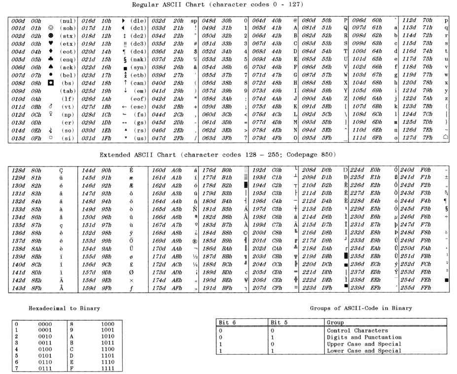

前言
建议学习了至少一门高级语言，再进行汇编的学习
计算机的基本概述
计算机的硬件
处理器
处理器也叫作CPU，主要包含运算器、控制器以及高速存储单元（寄存器）。
存储器
用于存放程序所涉及的数据。存储器的内容并不会因为被读取而消失，可以重复读取。只有写入新的信息后，才会修改原来的信息。
一定要将存储器和硬盘分开，硬盘属于外部设备。
按照读写能力，存储器分为随机存取存储器（RAM）、只读存储器（ROM）。常用的内存条就是RAM。
外部设备
除了CPU、存储器，其余一切的设备都是外部设备。通过I/O接口与外界设备进行连接。
系统总线
用于各个设备之间的信息传递。

计算机的程序语言设计
机器语言
由计算机能够识别的0和1组成的指令代码。一条指令由操作码和操作数构成。
难以理解、极易出错、难以发现错误
汇编语言
采用助记符，与机器语言无本质区别。需要翻译成机器语言才能执行。
比机器语言更容易理解和掌握，也容易调试和维护。
高级语言
不能直接运行，符合人们的语言习惯。
数据的表示
数制
1位16进制数等于4位2进制数
16进制数，末尾接一个H，来表示。例如10H就是16进制的10，但是10就是10进制的10。
2进制数，末尾接一个B，来表示。
数值的编码
请注意，计算机只是认识0和1，在它的世界里面没有正负数，没有小数，乃至没有正数。所有01代码对应的数字都是人为规定的。这里一定要想清楚。你可以这样子规定，别人也可以那样子规定，但是为了代码的方便与交流的方便，大家才统一了以下的一些标准。
比如 11 11 11 11，他可以是无符号整数255，也可以是有符号整数-128，也可以是补码表示-1，也可以是ASCII中的一个字符。它究竟是什么是程序员说了算。
整数
整数分为两部分，有符号与无符号。
| 0 | 1 | 2 | 3 | 4 | 5 | 6 | 7 |
|---|---|---|---|---|---|---|---|
| A | B | C | D | E | F | G | H |
按照一个8位数（C语言中的char类型）为例。
那么无符号数就是
$$
A \times 2^7 + B \times 2^6 + C \times 2^5 + D \times 2^4 + E \times 2^3 + F \times 2^2 + G \times 2^1 + H \times 2^0
$$
有符号数就是
$$
- A \times 2^7 + B \times 2^6 + C \times 2^5 + D \times 2^4 + E \times 2^3 + F \times 2^2 + G \times 2^1 + H \times 2^0
$$
你会发现其实就是A多了一个负号！
下面稍微举几个数字
| 8位二进制 | 有符号十进制 | 无符号十进制 |
|---|---|---|
| 00 00 00 00 | 0 | 0 |
| 00 00 00 01 | 1 | 1 |
| 01 11 11 11 | 127 | 127 |
| 10 00 00 00 | -128 | 129 |
| 11 11 11 11 | -1 | 255 |
对于计算机来说，2进制数其实并没有符号。之所以有符号只是因为我们认为规定的而已。之所以这样子规定只是满足了10进制的-1(11 11 11 11)，在2进制下加1会变为0((01) 00 00 00 00)。
原码
与上面讲的有符号数和无符号数的表示方法不同。
这里我们用上述的A来表示符号，剩余数直接表示数的大小。
$$
B \times 2^6 + C \times 2^5 + D \times 2^4 + E \times 2^3 + F \times 2^2 + G \times 2^1 + H \times 2^0
$$
当A是1，就把上述数加一个符号。如果是0就不管它。不引入
$$
- A \times 2^7
$$
反码
正数的反码与原码相同
负数的反码，除了符号位外，其余所有位取反，0变为1，1变为0。
| 十进制数 | C语言符号数 | 原码 | 反码 |
|---|---|---|---|
| 105 | 01 10 10 01 | 01 10 10 01 | 01 10 10 01 |
| -105 | 10 01 01 11 | 11 10 10 01 | 10 01 01 10 |
补码
正数的补码同原码
负数的补码是对应的反码然后加上1。也就是最上面讲的C语言符号数原理。
| 十进制数 | C语言符号数 | 原码 | 补码 |
|---|---|---|---|
| 105 | 01 10 10 01 | 01 10 10 01 | 01 10 10 01 |
| -105 | 10 01 01 11 | 11 10 10 01 | 10 01 01 11 |
| 十进制数 | 原码 | 反码 | 补码 |
|---|---|---|---|
| +127 | 01 11 11 11 | 01 11 11 11 | 01 11 11 11 |
| +126 | 01 11 11 10 | 01 11 11 10 | 01 11 11 10 |
| +2 | 00 00 00 10 | 00 00 00 10 | 00 00 00 10 |
| +1 | 00 00 00 01 | 00 00 00 01 | 00 00 00 01 |
| +0 | 00 00 00 00 | 00 00 00 00 | 00 00 00 00 |
| -0 | 10 00 00 00 | 11 11 11 11 | (1) 00 00 00 00 |
| -1 | 10 00 00 01 | 11 11 11 10 | 11 11 11 11 |
| -2 | 10 00 00 10 | 11 11 11 01 | 11 11 11 10 |
| -126 | 11 11 11 10 | 10 00 00 01 | 10 00 00 10 |
| -127 | 11 11 11 11 | 10 00 00 00 | 10 00 00 01 |
| -128 | 10 00 00 00 |
字符的编码
ASCII

最上边的一个表就是常用的前127个字符。后面一个表是拓展字符。
Unicode
能够兼容世界上所有字符，常用于网络。
GBK
简体汉字编码格式。也是常用在IDE中的。
8086微处理器
整个汇编的学习，都会围绕着8086处理器进行。
8086的寄存器
通用寄存器（缩写reg）
| 名称 | 含义 | 作用 |
|---|---|---|
| AX | 累加器 | 使用频率最高，用于运算、传递信息等。最接近高级语言变量的寄存器 |
| BX | 基址寄存器 | 用来存放储存器的地址 |
| CX | 计数器 | 用作循环次数的计数器 |
| DX | 数据寄存器 | 存放数据，在I/O指令中存放外设端口地址 |
| SI | 源变址寄存器 | 指向字符串或数组源的操作数 |
| DI | 目的变址寄存器 | 指向字符串或数组目的的操作数 |
| BP | 基址寄存器 | 默认指向程序堆栈区域的数据，主要用于在子程序中访问通过堆栈传递的参数和局部变量 |
| SP | 堆栈寄存器 | 专门用于指向程序堆栈区域的数据，在堆栈操作的时候，会自动增加减少，以便于指向堆栈顶部 |
数据寄存器
AX、BX、CX、DX都是16位的寄存器。也就是4位16进制数。
现在不理解没有关系，现在最主要知道AX可以大概类似于高级语言变量使用就可以了。切记，上面表格的8个通用寄存器，并不是简单的8个变量。只有AX可以类似使用！所以在汇编语言需要特别节约变量。
以AX为例，有16个格子，编号为0——15。在寄存器操作中经常会用到的是8位数而非是16位数。所以我们可以把AX一分为二，0——7看做一个8位寄存器叫做AL，8——15看做AH。
所以这4个16位寄存器，可以分为8个8位寄存器：AL、AH、BL、BH、CL、CH、DL、DH。
切记，不要将AL和AX看做两个寄存器，在修改AL值的时候，AX的值也会随之变化。
变址寄存器
在上面的数据寄存器中我们很容易发现，只有很少的寄存器能够使用，那么当我们想完成高级语言的数组（字符串操作同数组）操作时，就会用到SI、DI。比如我们在C语言中，声明数组
1 | char ch[100]; |
这里我们可以通过
1 | ch[n]; |
来操作数组，我们也可以通过
1 | *(ch + n); |
这里的ch就是数组的地址，所以同理，在汇编语言里也可以用SI来记录数组首地址，BX来存放n的值表示偏移量。
之所以要分为SI与DI。因为比如要把字符串a复制到字符串b，这里的字符串a就是数据来源，所以叫做SI、b是数据目的地，所以叫做DI。
指针寄存器
堆栈是汇编里非常重要的东西。如果不清楚堆栈是什么的，可以百度自行学习。简单可以把堆栈概括为先进后出，后进先出。BP、SP就是指向堆栈地址的寄存器。
SP会随着指令的运行而改变自身的大小，你可以理解为一个程序自带的堆栈。而BP是指向堆栈某处的指针，可以理解为一个标记点。
标志寄存器
有且仅有一个FLAGS。这是一个16进制的寄存器，他的一些位数被标定为了特殊的意义。FLAGS将会随着指令的进行而变化，特别是运算（加减乘除）后。
请注意，下表与我们正常书写的习惯是反过来的。书写习惯是从最高位到最低位。
| 0 | 1 | 2 | 3 | 4 | 5 | 6 | 7 | 8 | 9 | 10 | 11 | 12 | 13 | 14 | 15 |
|---|---|---|---|---|---|---|---|---|---|---|---|---|---|---|---|
| CF | PF | AF | ZF | SF | TF | IF | DF | OF |
状态标志
进位标志CF
用于标定加减运算最高有效位的进位和借位。
比如以11 11 11 11为例，这个数字再加上1。其值是[1] 00 00 00 00。因为8位寄存器，没办法表示方括号内的1。所以只能表示为00 00 00 00。但这很明显计算不对，所以为了告诉后面的代码我进位了。就将CF的值改为1。
它的意义，比如进行C语言中int类型的计算，这很明显没有任何一个寄存器可以存下这个32位的数字，哪怕是16位的AX都不行。所以我们只能把它分为低地址16位和高地址16位分开相加。两次运算是完全独立的，此时如果低地址的16位加法产生了进位，就可以通过CF来判断是否有进位，以此考虑是否要将高地址16位相加结果加1。
减法同理，不过此时的CF用来表示是否有被减数小于减数，产生借位。
奇偶标志PF
用于标定运算结果最低字节（1字节=8位，也就是地址最低的8位）中“1”的个数是奇数还是偶数。
如果其中1个个数为偶数，那么PF=1，反之PF=0。
例如10 11 01 10 中有5个1，那么PF=0。再比如11 11 01 10 中有6个1，那么PF=1。
调整标志AF
标定加减运算时最低半字节有无进位借位（也就是地址最低的4位）。
例如：00 11 10 10 + 01 11 11 00 = 10 11 01 10 ，低4位 10 10 + 01 10 = 1 01 10产生进位，那么AF=1。
零标志ZF
标定运算结果是否为0。如果是0，ZF=1。
例如：11 11 11 11 + 00 00 00 01 = [1] 00 00 00 00 。此时最高位舍弃CF=1，ZF=1。
符号标志SF
反映运算结果是正数还是负数。也就是最高位的状态。最高位是1，SF=1。反之SF=0。
例如：00 11 10 10 + 01 11 11 00 = 10 11 01 10 ，最高位是1，那么SF=1。至于这个数到底是看做负数还是正数，是程序员说了算，而非程序说了算。SF仅仅用于标定，如果是符号数，那么高位是1，就是负数。如果不是符号数，那么就是正数。
溢出标志OF
如果运算产生溢出，那么OF=1，反之OF=0。
认识这个标志位之前，先了解一个基本概念，为了方便计算在CPU中采用的是一个数的补码运算符号数。也是C语言采用的表示原理。
例如 01 11 11 11 + 00 00 00 01 = 10 00 00 00 。在符号数里 127 + 1 = -128 。你会发现这个数，莫名其妙从正的变成了负的，这就超过了我们的表示范围，这就叫做溢出。如果产生溢出，那么OF=1。减法同理。-128 - 1 = 127 。
处理器对两个数进行运算的时候，将会按照无符号数来设置是否进位的CF，而按照有符号数来确定是否溢出的OF。至于在实际操作时这到底是个什么数，由程序员来决定。这里可能有点绕，好好想想。
例如：10 10 10 10 + 01 11 11 00 = [1] 00 10 01 10 。按照无符号数 170 + 124 = 294 = [256] + 38，这个数产生了进位，所以CF=1。但是按照有符号数 -86 + 124 = 38，并没有溢出，所以OF=0。
| 加法运算及其结果 | CF | OF | ZF | SF | PF |
|---|---|---|---|---|---|
| 00 11 10 10 + 01 11 11 00 = [0] 10 11 01 10 | 0 | 1 | 0 | 1 | 0 |
| 10 10 10 10 + 01 11 11 00 = [1] 00 10 01 10 | 1 | 0 | 0 | 0 | 0 |
| 10 00 01 00 + 01 11 11 00 = [1] 00 00 00 00 | 1 | 0 | 1 | 0 | 1 |
控制标志
方向标志DF
用于串操作的时候确定操作方向。
当该位置1时（DF=1），存储器地址自动减少，串操作指令为自动减量指令，即从高位到低位处理字符串；当该位置0时（DF=0），存储器地址自动增加，串操作指令为自动增量指令。
中断允许标志IF
若IF=1，则CPU可以响应外部可屏蔽中断请求；若IF=0，则CPU不允许响应中断请求。IF的状态可由中断指令设置 。
比如你的老师在上课，这时候一个人进来了，喊了报告试图打断老师讲课。此时IF=1的话，老师就会停止讲课，先处理这个学生迟到的问题，然后再回来讲课，这就是中断。如果IF=0，老师就会继续讲课，不理这个学生。
陷阱标志TF
为程序调试而设的。当设置TF=1，CPU处于单步执行指令的方式；当设置TF=0时，CPU正常执行程序。
单步执行指令——处理器在每条指令执行结束时，便产生一个编号为1的内部中断这种内部中断称为单步中断所以TF也称为单步标志利用单步中断可对程序进行逐条指令的调试这种逐条指令调试程序的方法就是单步调试
指令寄存器
程序是由一条一条的指令组成的，这些指令存储在储存器中。那么我们如何知道我们的程序当前运行的指令在哪里呢？这时候就需要我们的16位指令寄存器IP。它会告诉CPU，当前程序执行到了哪里。
IP是专用寄存器，不能拿来做其他操作。IP会在每条指令结束之后，自动加上执行指令的字节数，从而指向下一条指令。它也可以被一些特定的语句修改值，跳向指定的运行地点，例如循环分支等。它不能被直接修改。
段寄存器（缩写seg）
| 访问存储器的目的 | 默认访问的段寄存器 | 可超越的段寄存器 | 偏移地址 |
|---|---|---|---|
| 取指令 | CS | 无 | IP |
| 堆栈操作 | SS | 无 | SP |
| 一般数据访问 | DS | CS，ES，SS | EA |
| 串操作的源操作数 | DS | CS，ES，SS | SI |
| 串操作的目的操作数 | ES | 无 | DI |
| BP作为基址的寻址方式 | SS | CS，DS，SS | EA |
（EA = Effective Address，意思是有效的偏移地址，并不指某个特定寄存器，在寄存器相对寻址会讲。）
代码段寄存器CS
指向该程序代码的首地址。刚刚讲的IP，就是相对于CS的偏移量。
用C语言来解释，你可以理解为CS[0]存放了，该程序的首条指令，CS[IP]就是下一条即将执行的指令。但是在汇编里面CS[IP]要写作CS:IP。
堆栈段寄存器SS
指向堆栈的首地址。还记得reg里面的SP吗？这就是相对于SS的偏移量。
当前这个堆栈的栈顶元素就是SS:SP。
数据段寄存器DS
这个完全是由程序员自己定的，里面写的东西。
比如：
1 | DATAS SEGMENT |
这里就声明了DS中的数据，按照我们存放的数据依次是8个8位数31H,21H,42H,52H,87H,23H,98H,01H。我们就可以按照地址DS:BX来依次访问各个数字。
附加段寄存器ES
附加的数据段，用于数据的保存。在串操作指令中将附加段ES作为其目的操作数的存放空间。
附加说明
上述四个段就可以构成一个完整的程序，代码、堆栈、数据、附加。可以让我们模块化的管理汇编程序。
可超越段
在上述的表格中，相信所有人都发现了一个叫做可超越段的字样。
在汇编里，上述那么多标定地址的寄存器，实际上他们都有自己独特的用处，不能随意使用，这也是汇编区别于高级语言最大的一点。
比如IP，指向的是相对于代码段CS，偏移IP的这条指令。在汇编里IP本身是一个地址,加上中括号[IP]就是这个地址指向的值（这个马上就会讲寻址），IP本身是偏移量，所以实际地址是CS:[IP]。但是我们也可以通过[IP]来直接访问，因为程序会默认把[IP]转换为CS:[IP]。因为这是一个专用寄存器！查询上表IP并不可以超越，所以它只能专用于CS。还有SP指向SS。串操作的DI指向ES。
但是反观BX，这是指向数据段DS的。默认会在DS中找偏移为BX的数据值。但是这个时候我们想访问附加段的数据怎么办？就会使用超越段的代码，直接指定ES:[BX]。
例如：
1 | MOV CX,ES:[BX] |
同理的其他的段超越前缀：
1 | cs: |
段寄存器的物理储存结构
8086规定段地址低4位均为0，每段最大不超过64KB。但是并不要求最小值，而且各段之间可以重叠，乃至完全重合。前提是程序运行时不会发生冲突。比如代码段仅仅只有2KB大小，逻辑上有64KB大小，但是这时候你也可以将数据段就紧贴着代码段写，从2KB多1个字节开始写数据段，这样子代码段和数据段虽然重叠一部分，但是并不会影响程序的执行。

8086的寻址方式
之所以要讲寻址，是因为我们的数据并不是凭空产生，不论是键盘还是鼠标或则屏幕，他们之间交流的数据都保存在了某个地方，当CPU想要对这些数据进行运算的时候，就需要找到他们。如何找到这就是寻址。
以最简单的代码为例
1 | mov des,src ;将src的值复制给des |
这条语句大概类似于高级语言的赋值语句。
1 | des = src; //将src的值复制给des |
之所以讲类似，是因为寄存器的操作并不是随心所欲的，上面都讲了一些寄存器存在限制。这些会在后面讲指令的时候讨论。
立即数寻址
立即数，说白了就是高级语言中直接放在代码里的数据。这个数字将会直接被保存在代码段中，当代码执行到此处时，自然就会用到该数据。
1 | mov al,02h ;将al赋值为02h。此时的02h存在放在cs:[ip]中。 |
请注意位数相对应，8位放8位，16位放16位，不能说32位放16位等等。
寄存器寻址
寄存器寻址就是直接从CPU的8个16位寄存器、4个段寄存器（这里指的是段寄存器存储的段首地址，并不是这个地址指向的值）中读取保存的数据。
1 | mov bx,ax ;将ax赋值给bx。 |
储存器寻址
直接寻址方式
通过一个数直接寻址，默认会在数据段ds中寻址。
1 | mov ax,[2000h] ;将ds:[2000h]赋值给ax |
寄存器间接寻址方式
可以将储存在段中的值找出来。
1 | mov ax,[si] ;将ds:[si]这个地址指向的值赋值给ax。 |
寄存器相对寻址方式
通过EA=BX/BP/SI/DI + 8/16位移量的值。请注意最小的数据单位是字节(Byte)，而不是1位2进制数(bit)。1B = 8b。
BX、SI、DI的默认段是DS，BP的默认段是SS。当使用非默认段的时候，可以使用段超越前缀。
1 | mov ax,[di+06h] ;将ds:[di+06h]的值赋值给ax |
如果偏移值相对于段首地址，超过了64KB(64*1024)，则会相对于64KB取模。
基址变址寻址方式
通过一个基址寄存器（BX/BP）加上一个变址寄存器（SI/DI）来构成一个EA。EA = BX/BP + SI/DI。
1 | mov ax,[bx+si] ;将ds:[bx+si]赋值给ax |
相对基址变址寻址方式
EA = BX/BP + SI/DI + 8/16位移量的值。
示例同基址变址寻址方式。
附加说明
1 | mov ax,[si+count] ;count可以是一个事先定义的常量或则变量 |
数据寻址的组合
数据的流通必须符合一定的法则，不然岂不是乱套了。
| 寻址方式 | 符号与说明 |
|---|---|
| 立即数 | IMM |
| 寄存器 | 通用寄存器REG、段寄存器SEG |
| 存储器 | MEM |

如上图，箭头就是数据流通的方向，简单讲几个。立即数可以到寄存器，但是不可能从寄存器到立即数。这是很明显的，以C语言为例。
1 | int a; |
数据可以在通用寄存器和通用寄存器之间流通，但是不能在存储器之间流通。